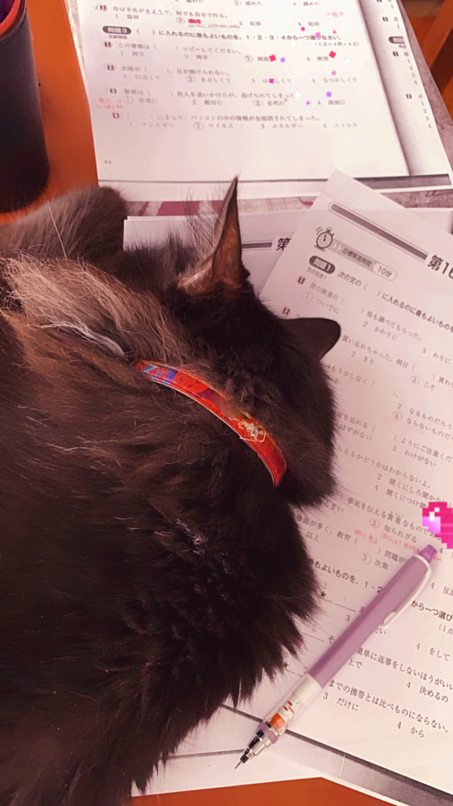
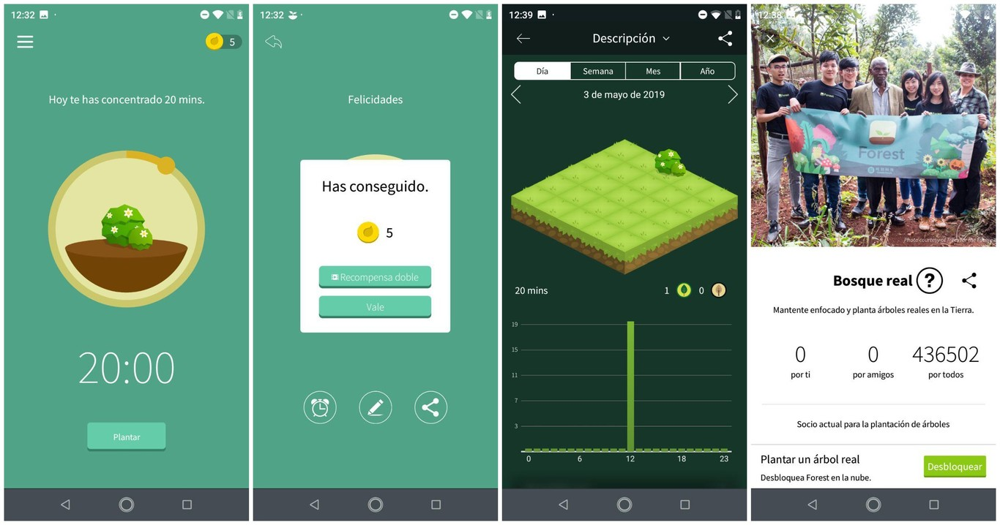
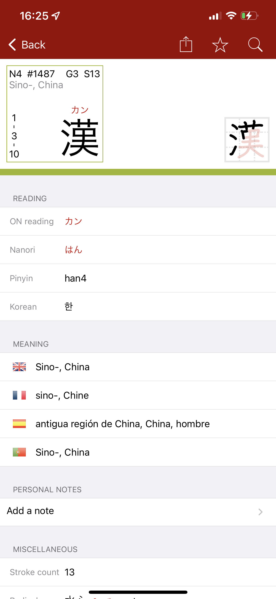
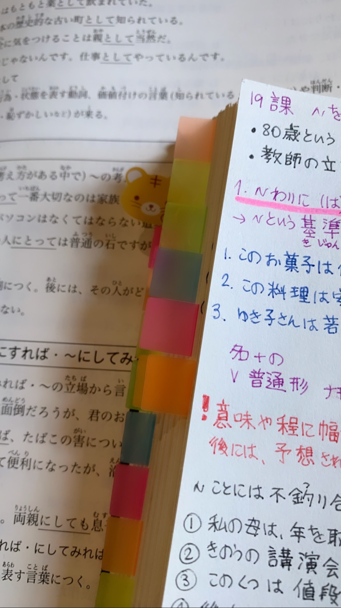
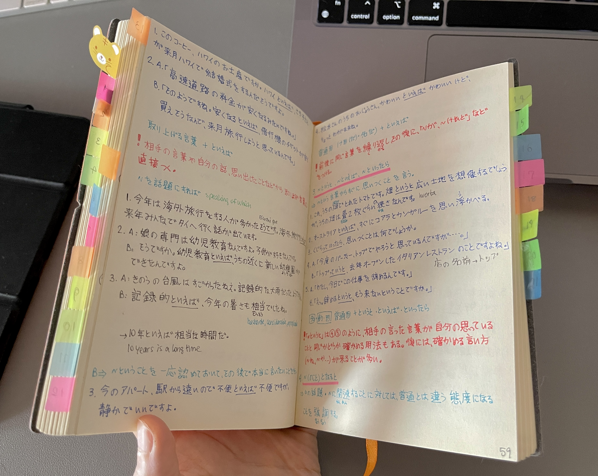
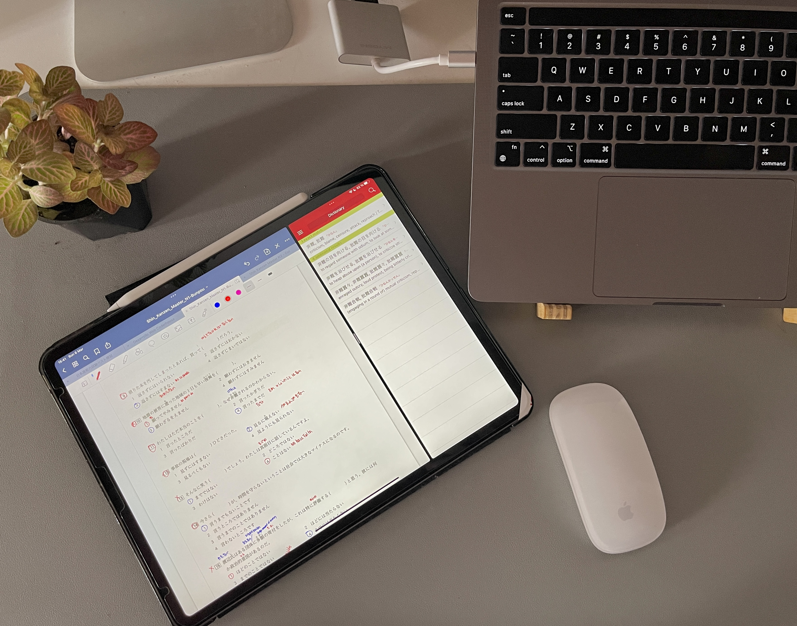
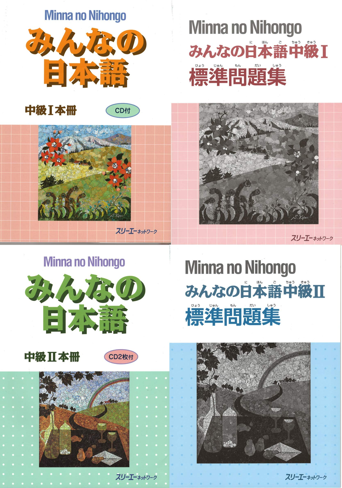

Comparto un ejemplo de video donde utilizan la técnica Pomodoro, y además puedes disfrutar de una ventana al barrio de Shibuya en Tokyo!
Técnicas de Estudio
No hay una fórmula mágica, esto depende de cada uno. Debes encontrar la manera que te resulte más cómoda y efectiva de acuerdo con tus hábitos, necesidades y personalidad. Sí, la personalidad influye mucho en esta tarea porque lo que me sirve a mi puede no servirte a ti.
Tiendo a ser una persona muy detallista, necesito anotar todo porque tengo memoria visual. Si no escribo siento como que no estoy estudiando, no sólo para kanji sino también para gramática.
Algunos consejos que me sirvieron
💡 Encuentra un ambiente cómodo para estudiar tranquilo
He pasado gran parte de mis horas de estudio en cafés (sobre todo Starbucks), porque sentía que si me quedaba en mi casa me distraía con facilidad, no solo sentia que mi casa no tenía un lugar adecuado para que yo estudie (silla y mesa cómodas, buena luz) sino también el hecho de que tengo a mis gatos, y como se sabe, los gatos se suelen acostar sobre nuestros libros mientras estudiamos. Además, el lugar donde viví muchos años estaba ubicado en una zona muy ruidosa de Buenos Aires, y debía soportar ruidos del tránsito, alarmas de vehículos o incluso música a todo volúmen y gritos de mis vecinos.
Soy consciente de que no podemos pasarnos todos los días en un café, por el tema económico y porque nuestra casa sigue siendo nuestra casa, y sería bueno que hagamos algo para sentirnos cómodos en ella.
Si estás en una situación parecida, con distracciones e impedimentos para concentrarte, prueba alguno de estos tips que me han ayudado.

- Cierra las ventanas de tu casa para reducir el ruido del exterior.
- Si tienes una computadora, smart TV o celular, busca en Youtube videos con música instrumental para que te ayuden a tapar el ruido del exterior. Mis preferidos suelen ser los videos “Study with me” (Estudia conmigo), o los Café Music FM. También me gustan mucho los videos de “Walking Tour”, donde va una persona con una cámara mostrándote una ciudad. Los de Japón son muy lindos para ponerte en clima, y dar ánimos si lo que quieres es conocer Japón algún día.
- Si el ruido del exterior es muy alto, prueba lo mismo pero con auriculares. Cuidado de no dañarte los oídos, no es recomendable pasar mucho rato con auriculares, asegúrate de usar unos cómodos.
- Si no tienes ganas de escuchar música, tapones para los oídos, o incluso los auriculares pueden tapar un poco el ruido del exterior.
Como me he mudado a una casa más tranquila, ya no siento la necesidad de ir a un café, tengo luz y espacio lo suficientemente cómodo como para poder estudiar acompañada de mis gatitos. Pero de vez en cuando esta bueno cambiar de entorno.
💡 Concentracion
¿Te cuesta concentrarte? Somos dos! En esta era donde las redes sociales y el móvil ya son parte nuestro, cuesta mucho pasar una cantidad de horas dedicado a una sola tarea. No sólo sentimos la necesidad de chequear el móvil cada 2 minutos, “por si pasa algo” sino que también estamos pendientes de los mensajes o notificaciones que recibimos. Batallo con eso día a día y no soy la única. Esto es lo que me ayuda a concentrarme.
- Poner música ambiental
- Silenciar las notificaciones del celular
- Si el ruido del exterior es muy alto, prueba lo mismo pero con auriculares. Cuidado de no dañarte los oídos, no es recomendable pasar mucho rato con auriculares, asegúrate de usar unos cómodos.
- Si utilizamos el celular para diccionarios online, intentemos cumplir con eso sin desviarnos a ver notificaciones. A veces estudiar con la computadora al lado puede ser menos perjudicial que el celular, ya que no solemos tener el mismo bombardeo de notificaciones. Uno de los diccionarios mas recomendados es https://jisho.org/
💡 Técnica Pomodoro
No tenia conocimiento de esto hace unos años pero me hubiese servido mucho. Consiste en seguir una serie de pasos para optimizar la concentración:
- Elegir tu objetivo a estudiar
- Poner un temporizador en 25 minutos
- Trabajar sin distracciones hasta que se cumpla el tiempo
- Tomar un descanzo de 5 minutos
- Cada 4 rondas completas, tomar un descanzo más largo de 15 o 30 minutos
Si googleas "Tecnica Pomodoro" puedes encontrar informacion util sobre esta tecnica, hasta videos en Youtuve que puedes ver, donde te marcan el tiempo de concentracion y los descanzos.

Forest App
Tambien te puede servir la app Forest
Para ayudarnos a ser conscientes del tiempo que invertimos frente al móvil, Forest nos desafía a permanecer determinada cantidad de tiempo sin tocar el móvil. Nos ofrece un incentivo: plantar un árbol y que lo cuidemos mientras respetamos el tiempo. Para esto, establecemos un tiempo a cumplir, y si no lo hacemos, el árbol muere. Cuantos más árboles logres hacer crecer, más grande será tu bosque. Por ejemplo, plantar un arbusto durante 20 minutos da cinco monedas. Esas monedas las puedes invertir en comprar nuevas especies de árboles virtuales para personalizar tu bosque. ¿Dónde está la gracia? En que si fallas y usas otra aplicación, en el bosque aparecerán los árboles muertos, dejando ahí para el recuerdo que esa vez no fuiste capaz de concentrarte.
Imagen tomada de xatakandroid.
Ingresa aqui si quieres leer una review de esta App.
💡 Estudiar en Grupo
Estudiar con amigos o compañeros de curso puede ser de gran ayuda para concentrarnos, ya que no estaremos solos. No importa si se reúnen a estudiar lo mismo, o algo totalmente diferente, la idea es acompañarse. Personalmente esto me obliga a ser más productiva y me sirve para utilizar menos mi móvil para procrastinar con redes sociales. Lo que solemos hacer es estudiar un rato, luego descansar para conversar, y luego volver cada uno a sus libros.
En tiempos de cuarentena por covid, me he juntado con mis amigos a través de videollamadas, así que no hay excusa!
Técnicas de estudio según tu nivel de japonés
💡 Hiragana
Cuanto antes aprendas este alfabeto mejor! Cuando comencé a estudiar japonés, me memoricé el alfabeto hiragana por medio de copiar una y otra vez todo el silabario en hojas de papel. Hoy en día, existen aplicaciones para el móvil que no solo son mucho más útiles sino que hacen que desperdiciemos menos papel, y podemos estudiar en cualquier momento libre desde la app.
Sin embargo, aun recomiendo que practiques la escritura de cada uno de los hiragana un par de veces para que aprendas el orden de los trazos, y a escribir.
💡 Kanji
Lo mismo que con Hiragana, hoy en día hay apps que son más populares que los libros, pero no dejo de recomendar algunos libros que contienen los kanji divididos por nivel de JLPT. El libro de Kanji de So Matome, Shin Kanzen Master, entre otros.
Algunas apps de diccionarios, como imiwa? para iOS, te muestran la forma correcta de escribir los trazos de un kanji. Esto es un buen complemento para cuando encuentres un kanji nuevo y quieres saber cómo se escribe.
💡 ¡Practicar la escritura!
Por más que puedas tomar apuntes en español, o incluso en hiragana, es recomendable que comiences a tomar apuntes utilizando kanji. Te ayudará a memorizarlos y a ser más eficiente en las notas que tomes. Lo que hago cuando no recuerdo un kanji es anotar la palabra en hiragana, luego al terminar la clase vuelvo a mis apuntes y busco el kanji correcto.
Si tienes memoria visual como yo, esto te será de mucha ayuda.


💡 Usa marcadores, colores y ayuda memorias
Hay estudiantes que organizan sus notas subrayando con un color las palabras nuevas, con otro la gramática, con otro color gramática o vocabulario difícil de entender. Yo lo he intentado pero no soy constante en esto. Quizás esto pueda ayudarte a ti.
💡 Tomar notas cuando estás en un nivel avanzado
Al llegar a N2, la gramática se vuelve muy compleja por lo que quizás no puedas quedarte solo con la explicación de un solo libro. Por ejemplo, por más que estudies con Shin Kanzen Master N2, no va a ser suficiente la explicación y vas a necesitar recurrir a otras fuentes de información para completar la explicación.
Recomiendo fuertemente el canal Nihongo No Mori 日本語の森, me ha ayudado a cerrar conceptos de N2 que no entendía.
Lo que hacía es ver el video como si fuese una clase, y tomar nota de las explicaciones y ejemplos. Como dije, a mi me sirvió escribir todo, pero no es necesario. Si eres de los que aprenden escuchando, con verlo unas veces bastará.
Para entender gramatica de N2, utilice una combinación de Shin Kanzen Master + el diccionario de gramatica どんなときどう使う日本語文型辞典 + Nihongo no Mori.
Mi cuaderno de notas de N2 terminó así
Lleva mucho tiempo anotar todo, lo sé. Fue la manera en la que pude estudiar y entender la gramática. Cada marcador corresponde a una unidad del 新完全マスターN2文法. Este es sólo un ejemplo, te invito a que encuentres la manera de hacer tus notas de la forma que más te guste.

En caso de que no tengas tiempo para hacer este trabajo extra, sirve subrayar los libros o agregar anotaciones en ellos en cada punto de gramática o vocabulario que quieras aclarar. Una anotación que te permita cerrar la idea.
El esfuerzo y preparación para N2 y N1, decía una sensei muy querida, es un 70% del alumno, ocupado en investigación y estudio antes de la clase, y un 30% en el sensei, encargado de explicar los conceptos nuevos o los que no han quedado claros.
En mis clases de N1, creo que es un 80% estudio por parte del alumno, y durante la clase se corrigen los ejercicios y las dudas. Si este no es un método en el cual te sientas cómodo, siempre asegúrate de hablar con tu sensei para que te ayude a encontrar un método correcto para ti.
💡 Estudiar con una tablet
Desde el 2006 vengo acumulando/atesorando libros de texto de japonés de diferentes niveles. Admito que en total tengo aproximadamente 90 libros. No he podido aún deshacerme de los libros de N4 aunque sí he vendido los de N5. Como soy una persona que anota todo, mis libros tienen muchas notas útiles que he ido agregando, y aun no estoy preparada para dejarlos ir. Sin embargo, recientemente he tenido la idea de en un futuro salir a viajar más por el mundo, y por supuesto, estar unos 3 meses en Japón (tiempo válido que se me permite por ser argentina). Pensé, qué hacer con todos mis libros y mis anotaciones? Para mi estudio de N1, lo estoy haciendo enteramente en la tablet, a pesar de contar con los libros físicos, pero el saber que tengo acceso a muchos libros en un solo lugar es muy cómodo a la hora de estar viajando.
Si quieres llevar el menor peso posible, ya sea porque estás de viaje o simplemente no te gusta cargar una mochila llena de libros, una tablet es una gran inversión. Es algo costoso, por eso digo inversión. Si realmente la vas a utilizar, vale la pena. En este caso, tengo un iPad 12.4 con un apple pencil, y uso dos apps: Notability y Goodnotes 5.
No reemplaza la sensación de escribir en un cuaderno pero se acerca bastante.

💡 No quedarse solo con los ejercicios que nos dan en la clase de japonés
Es mejor prepararse de temprano, ya que mientras más avanzas de nivel, la cantidad de tiempo de estudio sin profesor aumenta. En el instituto donde comencé a estudiar japonés, y creo que en casi todos los institutos de Argentina, el libro que se usa es el Minna no Nihongo. Creo que es un muy buen libro para comenzar, además del libro principal cuenta con libros complementarios para practicar más ejercicios de gramática. Te ayudará a aprender nuevas palabras y reforzar la gramática vista en clase.
💡 Aprovecha las redes sociales
Las redes sociales también proporcionan una gran oportunidad para aprender idiomas. Seguir a personajes famosos que escriben en japonés en Twitter o Facebook para acostumbrarnos al idioma podría ser una buena idea.
Seguir algún tema que te interese, por ejemplo el hashtag #langtwt , el cual te muestra mensajes de gente que estudia diferentes lenguajes y expresa sus problemáticas o comparte consejos. Por supuesto, seguir temas que te interesen en Japonés, como tu mangaka preferido.
Otra posibilidad es unirse a grupos que compartan nuestro interés en el aprendizaje de un idioma. De esta manera podremos intercambiar recursos de estudios y compartir nuestras dudas y preocupaciones. Facebook está lleno de estos grupos, pero sinceramente no es un recurso que puede ser de mucha ayuda, porque la mayoría de estos suelen estar plagados de mensajes de gente que quiere que le enseñen japonés gratis, o gente que pregunta una duda y recibe respuestas incorrectas o engañosas. Recomiendo alejarse de estos grupos, es mejor tener un grupo pequeño de gente comprometida con los mismos objetivos que estar en un grupo de 5 mil miembros sin obtener ningún beneficio.
